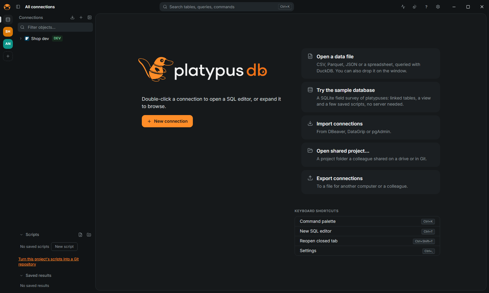

Getting started
Install PlatypusDB, open a connection and learn the few keys that do most of the work. Every feature, area by area, is in FEATURES.md.

Install
Download the installer for your system from the releases page: .exe or .msi for Windows, .dmg for macOS, .AppImage, .deb or .rpm for Linux. The app updates itself (see Updates).
Portable copy: put the executable in a folder with an empty data folder beside it. Connections, settings, history and scripts then live in data, and the folder can move to another machine or a USB stick.
First connection
- Open PlatypusDB and click New connection, or paste a connection URL (
postgres://…,mysql://…, a JDBC URL or an ADO.NET string). - Choose the database from the grid of logos. If it needs a driver that is not installed yet (Snowflake, BigQuery, Databricks and Trino, DuckDB, Oracle, IBM Db2), the app offers to download it at once; Cancel leaves the form as it is.
- Fill in the form and click Test connection, then Save.
- Double-click the connection to open a SQL editor, or expand it to browse.
The form is explained in Connect; each database has its own page in Databases.
No database at hand? Click Try the sample database on the welcome screen: a SQLite field survey of platypuses, with linked tables, a view and a few saved scripts.
Keys to learn first
Every action, connection and table is a few letters away in the command palette.
| Keys | Action |
|---|---|
Ctrl+K | Command palette |
Ctrl+Enter | Run the statement under the cursor (or the selection) |
Alt+X | Run the script |
Ctrl+Space | Autocomplete |
Ctrl+Shift+F | Format the script (or the selection) |
Ctrl+Shift+E | Explain the statement under the cursor |
Ctrl+T | New tab |
On macOS use Cmd instead of Ctrl. Every shortcut can be changed in Settings › Keyboard shortcuts; the full list is in SHORTCUTS.md.
Next
Run queries, edit data, or read Safety before connecting to production.
All the pages
User guide
- User guide — Short pages, each a task to follow step by step. FEATURES.md stays the reference, area by area; these pages link to it for the details.
- Connect to a database — Choosing the database for a new connection
- Run queries and read results — JOIN completion from the foreign keys
- Edit data — Pending changes in the data editor
- Import and export — The actions below are in the right-click menu of the navigator, and in the command palette (Ctrl+K). The full list of formats and options is in FEATURES.md.
- Work safely: production, read-only, confirmations, masking — Everything here is also in FEATURES.md.
- Projects and sharing — A project is a group of connections, scripts and open tabs, shown in the rail on the left. The details are in FEATURES.md and FEATURES.md.
- Use PlatypusDB from an agent — Claude Code, Codex, Cursor and other MCP clients can use your saved connections through PlatypusDB's MCP server. This page is the short path; every tool,…
- Troubleshooting and FAQ — Start with Test connection in the connection's form: it reports the failure with the server's own message, and names the server version where that helps.
- Databases — One page for each database: how to connect, what the login needs, what works and what does not, and which versions the test suite runs on. Connecting…
Databases
- PostgreSQL — One driver, built on tokio-postgres, speaks the PostgreSQL protocol. It opens PostgreSQL 12 and later, and the servers and services that speak the same…
- MySQL — One driver (the mysql_async client) opens MySQL 5.7 and later and MariaDB 10.6 and later. Both have a tile in the grid of databases; the driver tells which…
- SQLite — SQLite runs inside the app (rusqlite with SQLite built in): no server, no host, no user, no password, nothing to download.
- SQL Server — The driver speaks TDS itself (a patched tiberius), so there is nothing to install or download. It is written for SQL Server 2017 (14.0) and later, and for…
- Oracle — The driver uses Oracle's client library (ODPI-C, through the oracle crate), loaded when you connect. The library is Oracle Instant Client, which the app…
- ClickHouse — The driver talks to ClickHouse's HTTP interface and reads results in the Arrow stream format. It is part of the app; nothing is downloaded. It browses,…
- DuckDB — DuckDB runs inside the app, like SQLite: no server, host, user or password. Unlike SQLite, the app does not carry DuckDB's library; it downloads it the…
- libSQL — The driver speaks the Hrana 3 protocol over HTTP(S) to a libSQL server (sqld) or to Turso. The SQL is SQLite's, so the navigator, the types and the plans…
- MongoDB — The driver is MongoDB's official Rust driver (with rustls, so no OpenSSL). It opens MongoDB 5.0 and later. The editor takes mongosh syntax, not SQL. The…
- Redis — The driver is built on the redis crate (RESP3 when the server speaks it, with rustls for TLS). It opens Redis 6 and later, and Redis Stack for JSON keys.…
- Elasticsearch — One driver talks to both over their HTTP API (reqwest with rustls). The server says which it is when you connect, and the connection shows it (Connected:…
- Cassandra — One driver, built on the scylla crate (with rustls), speaks CQL over the native protocol to both. The server says which it is, and the connection shows it.…
- ADBC — These databases are reached through ADBC (Arrow Database Connectivity) drivers, libraries that the app loads when you connect. Snowflake, BigQuery,…
- Db2 and ODBC — Db2, and any database with an ODBC driver or a data source (DSN), are reached through the system's ODBC driver manager. This works on Windows only for now:…
Reference
- Features — Everything PlatypusDB does, area by area. The README has the short version. To do something step by step, see the user guide.
- Keyboard shortcuts — On macOS use Cmd instead of Ctrl. Every shortcut can be changed in Settings › Keyboard shortcuts.
- Agents (MCP) and the CLI — Claude Code, Codex, Cursor and other MCP clients use your saved connections through PlatypusDB's MCP server: the app itself, started with --mcp, which they…
- Plugins — PlatypusDB runs plugins written in any language that compiles to WebAssembly (Rust for wasm32-unknown-unknown, AssemblyScript, TinyGo, C, Zig…). A plugin…
- The connections file (.platypusconn) — What Export connections writes and Import connections › PlatypusDB reads. The code is crates/platypus-sync/src/export.rs.